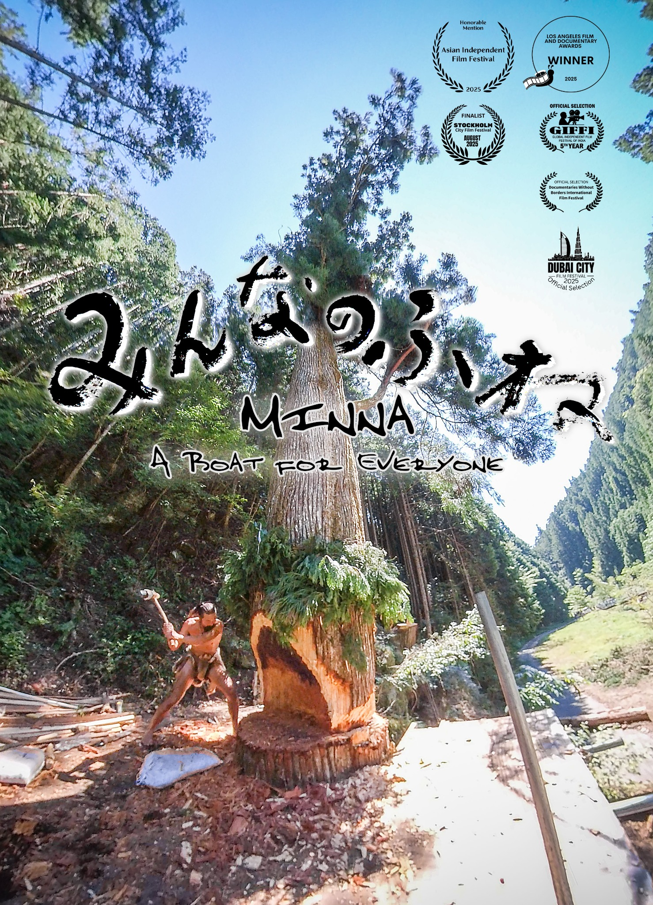

Documentary Films
FILMS
Tiny Mouse Factoryが制作するドキュメンタリー映画。
作品ごとの世界観を保ちながら、一つのフィルモグラフィーとして。

Screenings / Talks
上映・講演について
映画上映にあわせた監督トーク・講演・オンライン登壇などを承ります。
学校、自治体、地域上映会など、対象や目的に合わせて内容を調整します。
Tiny Mouse Factoryが制作するドキュメンタリー映画。
作品ごとの世界観を保ちながら、一つのフィルモグラフィーとして。

映画上映にあわせた監督トーク・講演・オンライン登壇などを承ります。
学校、自治体、地域上映会など、対象や目的に合わせて内容を調整します。